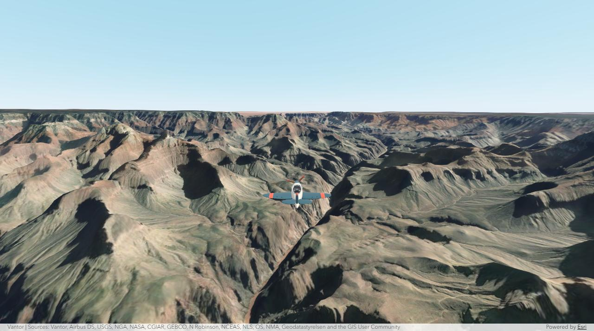

ArcGIS Flight Component#
A web component that lets you fly a plane through 3D scenes built with the
ArcGIS Maps SDK for JavaScript.
Put <arcgis-plane-navigation> next to your scene, then steer with the
keyboard, a gamepad, or a touch joystick.

Documentation · Samples · API reference
Quick start#
Install the component and the ArcGIS SDK:
npm install github:ceddc/arcgis-flight-component @arcgis/core@~5.1.24 @arcgis/map-components@~5.1.24Import both components in your JavaScript entry point:
import "@arcgis/map-components/components/arcgis-scene";
import "@ceddc/arcgis-flight-component";Add a scene and point the flight component at it:
<arcgis-scene id="scene" basemap="satellite" ground="world-elevation"
camera-position="7.71, 46.01, 5600" camera-heading="235" camera-tilt="78">
</arcgis-scene>
<arcgis-plane-navigation reference-element="scene"></arcgis-plane-navigation>Click the scene and fly with the arrow keys or WASD.
Get started walks through the full page, the
controls, and how to use your own SceneView.
Samples#
| Sample | What it shows |
|---|---|
| Basic flight | The smallest setup: one scene, one component, HTML only. |
| Flight controls | Geneva imagery, terrain, and 3D buildings loaded from service URLs, with a toolbar. |
| Zurich local scene | A WebScene in a local coordinate system (Swiss LV95). |
| Other aircraft | Five aircraft, weather, time of day, and photo capture. |
| Scene explorer | Pick a place, search an address, or load any public WebScene. |
Code and notes for each one are on the Samples page.
Documentation#
- Get started: install, add the component, and fly.
- Configure the flight: start position, camera, controls, toolbar, and ground clearance.
- Custom aircraft: use your own model or change how it flies.
- How it works: what the component controls, supported scenes, and units.
- SDK versions: SDK 4.30 to 5.1, bundlers, AMD, and plain HTML.
- API reference: properties, attributes, methods, and events.
- Troubleshooting: fixes for common problems.
- Development: run the samples, change the code, and build.
Run the samples locally#
git clone https://github.com/ceddc/arcgis-flight-component.git
cd arcgis-flight-component
npm ci
npm run devOpen http://127.0.0.1:3116/. The samples in demos/ are a good place to
start your own project.
Requirements#
- ArcGIS Maps SDK for JavaScript 4.30 to 5.1
- A browser with WebGL
- Node.js 20 or later, for development
License#
The source code and bundled aircraft models are available under the MIT License. ArcGIS services and data have their own terms.
This project uses the ArcGIS Maps SDK for JavaScript and the Calcite Design System from Esri.